Apache Parquet · 核心原理图谱
自描述列式文件格式:文件按行组×列块×页三级切分,尾置 Thrift 元数据自定位,Statistics/PageIndex/布隆过滤器按谓词跳读。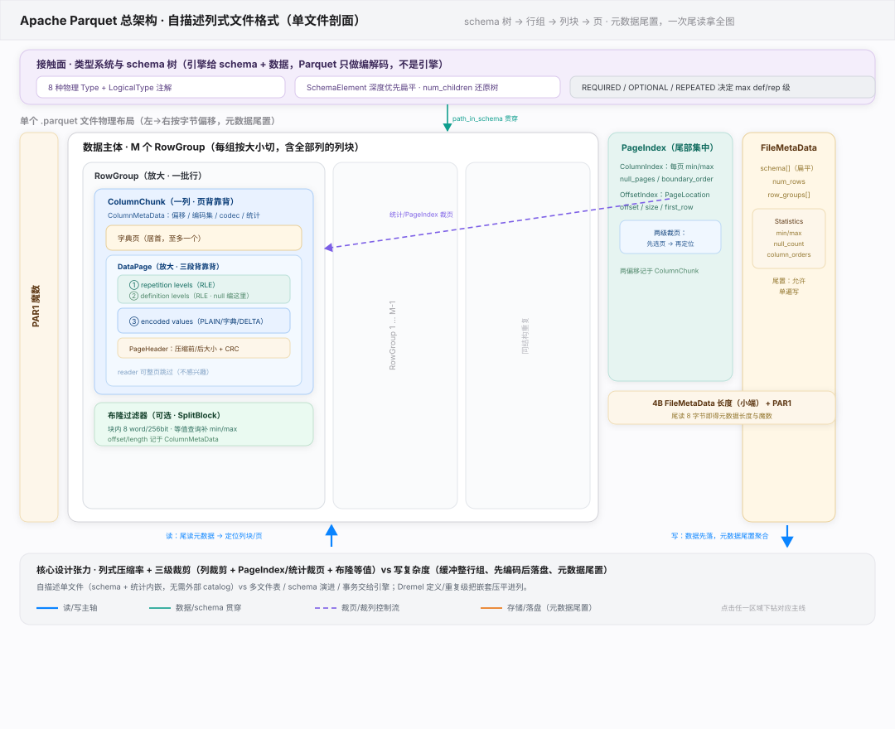
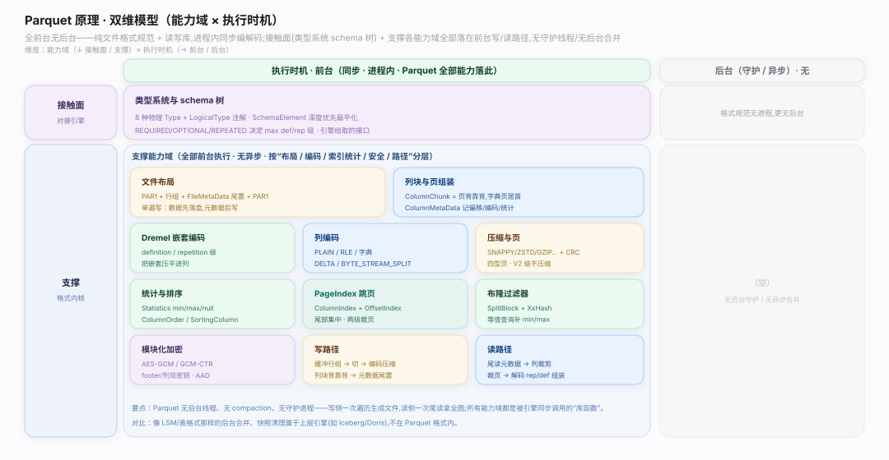
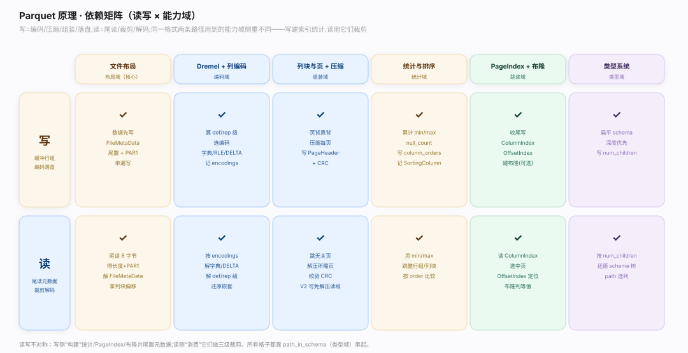
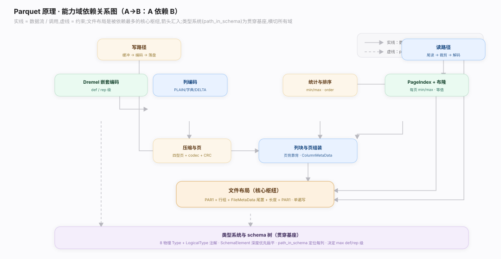
src/main/thrift/parquet.thrift + 各 *.md 规范）。| 层 | 主线 | 一句话职责 |
|---|---|---|
| 接触面 | 类型系统与 schema 树 | 8 种物理 Type + LogicalType 注解 + 扁平树 num_children |
| 布局 | 文件布局（核心） | PAR1 + N 列 × M 行组 + FileMetaData 尾置 |
| 编码 | Dremel 嵌套编码 | def/rep 展开嵌套，null 编进 def 级 |
| 编码 | 列编码 | PLAIN / RLE / 字典 / DELTA / BYTE_STREAM_SPLIT |
| 页 | 压缩与页 | codec + PageType 四型 + DataPageV2 免解压读级 |
| 组装 | 列块与页组装 | ColumnChunk→ColumnMetaData，字典页居首，页背靠背 |
| 统计 | 统计与排序 | Statistics min/max/null + ColumnOrder/BoundaryOrder |
| 索引 | PageIndex 跳页 | ColumnIndex + OffsetIndex 尾部集中，两级裁页 |
| 索引 | 布隆过滤器 | SplitBlock + XxHash，等值裁剪补 min/max |
| 安全 | 模块化加密 | AES-GCM，footer/列双密钥，AAD 防换页 |
| 流程 | 写路径 | 单遍写，元数据尾置 |
| 流程 | 读路径 | 倒读拿全图 + 裁列裁页 + rep/def 组装 |
| 声明 | 内涵 | 对比 |
|---|---|---|
| 按列存，三级切分 | 行组（水平切一批行）× 列块（每列一段）× 页（列块内最小编码/压缩单元），同列值连续 → 高压缩 + 列裁剪 | 与 CSV/Avro 等行存根本不同 |
| Dremel 嵌套编码是招牌 | 用重复级 rep + 定义级 def 把任意 struct/list/map 嵌套无损压平成列，null 编进 def 级不单独占位 | 源自 Google Dremel 论文，Parquet 的核心创新 |
| 多级统计/索引支撑跳读 | 行组 Statistics + PageIndex 每页 min/max + SplitBlock 布隆；谓词层层裁到页级，只读命中字节 | 列存"扫得快"的关键，纯文件格式不管表/事务 |
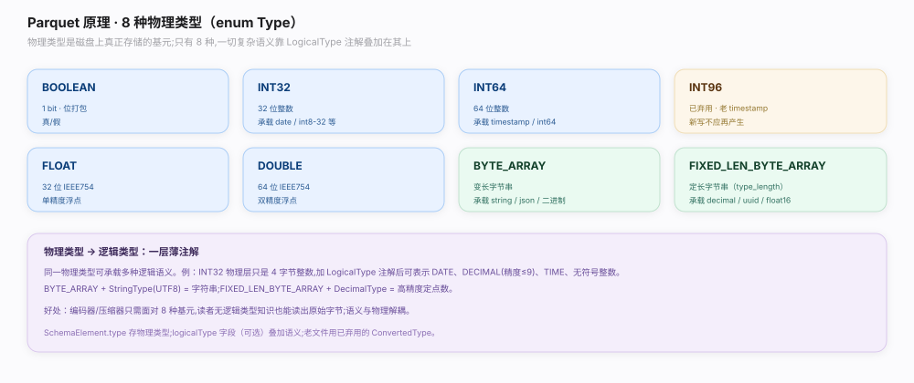
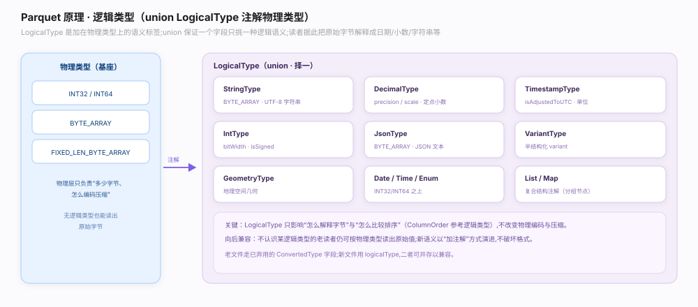
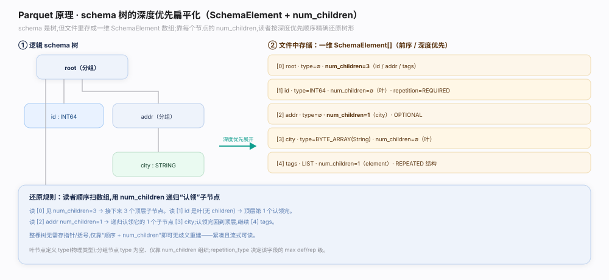
SchemaElement 列表的 schema 树。是【文件布局】的骨架、【Dremel 嵌套编码】算 max level 的依据、【统计与排序】ColumnOrder 的作用对象。源码基准 parquet-format（parquet.thrift）。parquet.thrift:32）决定字节形态，语义靠 union LogicalType（:478，STRING/DECIMAL/TIMESTAMP/UUID…）注解叠加而非新增物理类型，天然向前兼容；schema 是树但在 FileMetaData 里深度优先前序压平成 SchemaElement（:512）数组，group 带 num_children（:535）无 type、叶子带 type 无 num_children，读者按前序 + num_children 重建树，每叶子列唯一 path_in_schema 贯穿列块/统计/PageIndex/布隆的定位；repetition_type（:183：REQUIRED/OPTIONAL/REPEATED）供 Dremel 算 max level，ColumnOrder（:1082）定 min/max 比较语义。LogicalType 精确解释时区/精度，避免歧义。LogicalType 注解叠加。num_children 扁平存，读时重建。| 结构 | 位置 | 职责 |
|---|---|---|
| enum Type | parquet.thrift:32 | 8 种物理基元类型 |
| union LogicalType | parquet.thrift:478 | 语义注解（STRING/DECIMAL/TIMESTAMP…） |
| struct SchemaElement | parquet.thrift:512 | 扁平树的一个节点 |
| num_children | parquet.thrift:535 | group 子节点数，重建树的依据 |
| enum FieldRepetitionType | parquet.thrift:183 | REQUIRED/OPTIONAL/REPEATED |
| union ColumnOrder | parquet.thrift:1082 | 每列的排序语义（min/max 怎么比） |
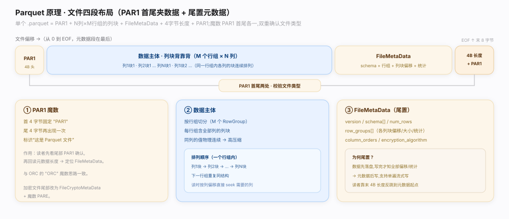
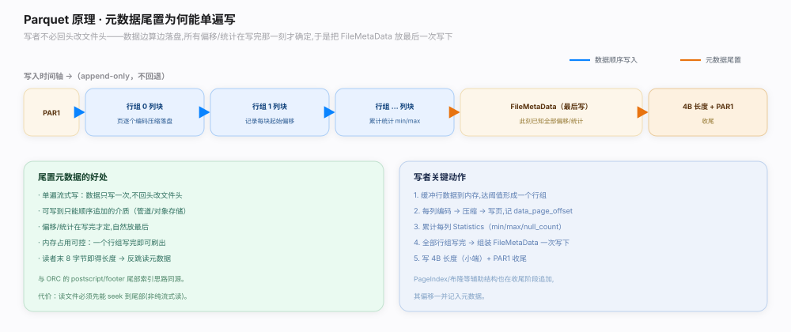
PAR1 魔数开合、中间 N 列 × M 行组、FileMetaData 尾置。是一切读写的物理基础，被【写路径】生产、【读路径】倒读、【列块与页组装】填充、【统计与排序】/【PageIndex】挂索引。源码基准 parquet-format（README.md、parquet.thrift）。PAR1 头魔数 + 行组数据体（多个 RowGroup 背靠背，每行组每列一 ColumnChunk、列块内页背靠背）+ 尾置 FileMetaData（parquet.thrift:1386：schema 扁平树 / num_rows / row_groups[] / 各列 ColumnMetaData 偏移统计）+ 4B 长度 + PAR1 尾魔数四段（README.md:96）；三级切分 = 行组（:1029，水平一批行、并行粒度）× 列块（:971，一列连续字节、列裁剪粒度）× 页（最小编码/压缩/裁页单元）；元数据尾置是为单遍流式写（README.md:117，偏移/统计写完才定、放最后一次写下），读时倒读末 8 字节拿长度再回跳取全图；魔数首尾各一双重确认，可写到只能顺序追加的介质、一行组写完即刷出内存可控，代价是读需能 seek 到尾部。FileMetaData。PAR1 之前），写完才知全貌；开头只有 4 字节 PAR1。| 结构 | 位置 | 职责 |
|---|---|---|
| 魔数 "PAR1" | README.md:96 | 首尾各一，标识 + 倒读校验 |
| FileMetaData | parquet.thrift:1386 | 尾置元数据（schema/行组/列块/统计） |
| RowGroup | parquet.thrift:1029 | 水平切一批行，并行粒度 |
| ColumnChunk | parquet.thrift:971 | 行组内一列的连续字节 |
| ColumnMetaData | parquet.thrift:888 | 列块的偏移/编码集/统计/大小 |
| 单遍写 | README.md:117 | 元数据尾置，数据只写一遍 |
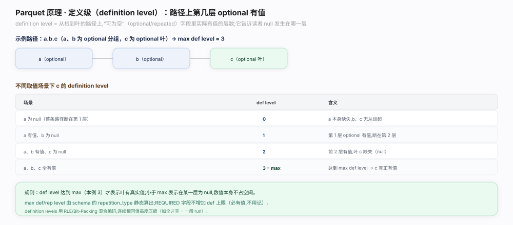
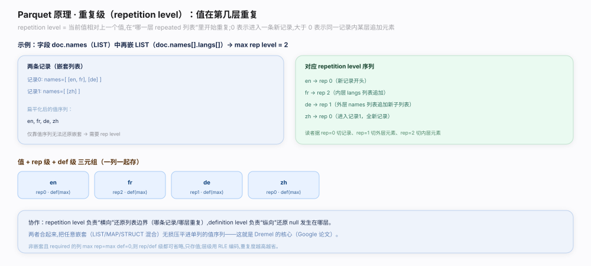
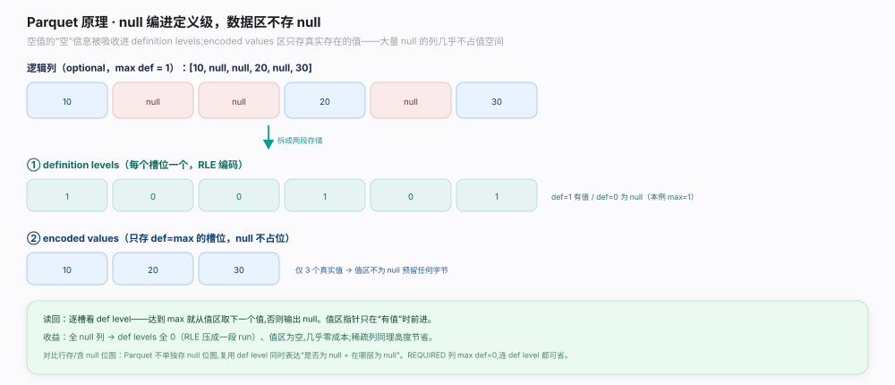
struct/list/map 嵌套结构无损压平成列：用重复级 repetition level (rep) 和定义级 definition level (def) 两串小整数记录每个叶子值的嵌套位置，null 编进 def 级不单独占位。由【类型系统】的 repetition_type 算出每列的 max def/rep level。是【列编码】的上游（rep/def 也用 RLE 编码），【读路径】组装嵌套行的逆运算依据。源码基准 parquet-format（README.md Nested Encoding 一节 + Dremel 论文）。README.md:166）把任意 struct/list/map 嵌套无损压平成列：每个叶子列存值序列 + 定义级 def + 重复级 rep 三串——def 记该值沿路径定义到第几层（def==max 为真值、def<max 隐含某 OPTIONAL 层 null，null 不单独占值位）、rep 记从第几层开始重复（rep==0 开新记录、rep==k 在第 k 层 REPEATED 续接，划 list 边界）；max def/rep level 由 schema 的 repetition_type（parquet.thrift:183：REQUIRED 不增 / OPTIONAL 增 def / REPEATED 增两者）静态算出，级别值域小用位打包+RLE 近乎免费编码，非嵌套 REQUIRED 无 null 列可省略级别（README.md:184）；读时靠 rep/def 序列把扁平值重组回嵌套结构——既无损保留嵌套又保持列存紧凑。| 概念 | 位置 | 职责 |
|---|---|---|
| Nested Encoding | README.md:166 | rep/def 编嵌套的规范说明 |
| Data Pages 级别编码 | README.md:184 | rep/def 在页内编在值之前 |
| definition level | README.md:166 | 定义到第几层，编 null + 缺失层 |
| repetition level | README.md:166 | 从第几层重复，划 list 边界 |
| repetition_type | parquet.thrift:183 | REQUIRED/OPTIONAL/REPEATED 决定 max level |
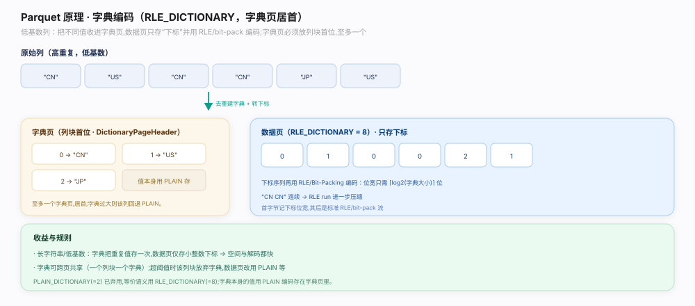
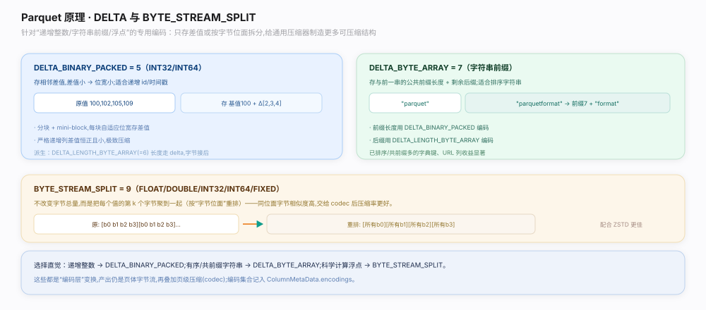
PLAIN、RLE/位打包混合、字典编码（PLAIN_DICTIONARY/RLE_DICTIONARY）、DELTA 系列、BYTE_STREAM_SPLIT。是【压缩与页】的上游（先编码再压缩）、【Dremel 嵌套编码】rep/def 的落地手段。源码基准 parquet-format（Encodings.md、parquet.thrift enum Encoding）。enum Encoding（parquet.thrift:573）按数据特征选算法——PLAIN（Encodings.md:50，兜底/高基数）、RLE/位打包混合（:92，布尔 + rep/def 级别，游程与位打包按段自适应）、字典（数据页 RLE_DICTIONARY parquet.thrift:626 + 字典页 PLAIN_DICTIONARY :596，低基数只存下标、超阈值回退 PLAIN）、DELTA 系列（DELTA_BINARY_PACKED Encodings.md:201 存整数差值、DELTA_LENGTH_BYTE_ARRAY :322 集中存长度、DELTA_BYTE_ARRAY :345 存字符串公共前缀+后缀）、BYTE_STREAM_SPLIT（:638，浮点按字节拆流利于压缩）；先编码榨干结构冗余、再交 codec 压残余熵，编码集合记于 ColumnMetaData.encodings。| 编码 | 位置 | 适用数据 |
|---|---|---|
| PLAIN | Encodings.md:50 | 兜底，高基数无规律 |
| RLE / 位打包 | Encodings.md:92 | 布尔 + rep/def 级别 |
| PLAIN_DICTIONARY / RLE_DICTIONARY | parquet.thrift:596 / :626 | 低基数（枚举/状态/国家） |
| DELTA_BINARY_PACKED | Encodings.md:201 | 递增整数（ID/时间戳） |
| DELTA_LENGTH_BYTE_ARRAY | Encodings.md:322 | 变长字节数组的长度集中 |
| DELTA_BYTE_ARRAY | Encodings.md:345 | 有序/相似字符串（前缀增量） |
| BYTE_STREAM_SPLIT | parquet.thrift:638 | 浮点（FLOAT/DOUBLE） |
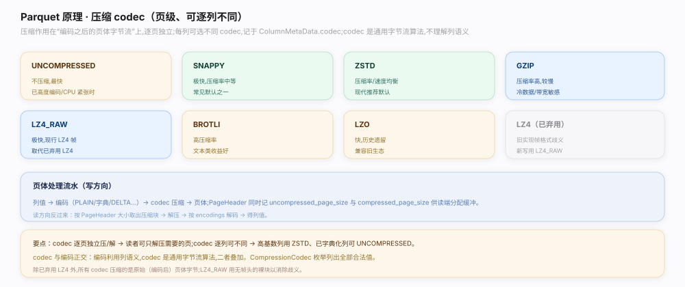
![Parquet V2 免解压]()
PageType 分数据页/字典页/索引页等；压缩 codec 在编码之后对页数据整体压缩。是【列编码】的下游、【列块与页组装】的组成粒度、【PageIndex】/【读路径】裁页与免解压读的对象。源码基准 parquet-format（Compression.md、parquet.thrift PageType/PageHeader）。enum CompressionCodec（parquet.thrift:650，UNCOMPRESSED/SNAPPY/GZIP/ZSTD/LZ4_RAW…，Compression.md:40）对编好的页字节整体压、每列独立选、记于 ColumnMetaData.codec；enum PageType（:661）分 DATA_PAGE（v1，头 DataPageHeader :679，rep/def 级别压在区内）/DATA_PAGE_V2（头 DataPageHeaderV2 :732，级别移出压缩区且不压、is_compressed :759 标值区是否压）/DICTIONARY_PAGE（列块首取值表）/INDEX_PAGE（遗留）；PageHeader（:810）记未压缩/已压缩大小 + 可选 CRC32（:837）；先列编码去结构冗余、再 codec 压残余熵两道正交，V2 把级别拎到压缩区外实现"先廉价看级别/统计、命中才解压值区"，配合 PageIndex 大省解压 CPU。| 结构 | 位置 | 职责 |
|---|---|---|
| enum CompressionCodec | parquet.thrift:650 | SNAPPY/ZSTD/LZ4_RAW… 可选压缩 |
| enum PageType | parquet.thrift:661 | DATA_PAGE/V2/DICTIONARY/INDEX |
| PageHeader | parquet.thrift:810 | 类型 + 未压缩/已压缩大小 + 可选 crc |
| crc（CRC32） | parquet.thrift:837 | 页级损坏检测 |
| DataPageHeader | parquet.thrift:679 | v1 数据页头（级别压在区内） |
| DataPageHeaderV2 | parquet.thrift:732 | v2 数据页头，级别移出压缩区 |
| is_compressed | parquet.thrift:759 | v2 值区是否压缩标志 |
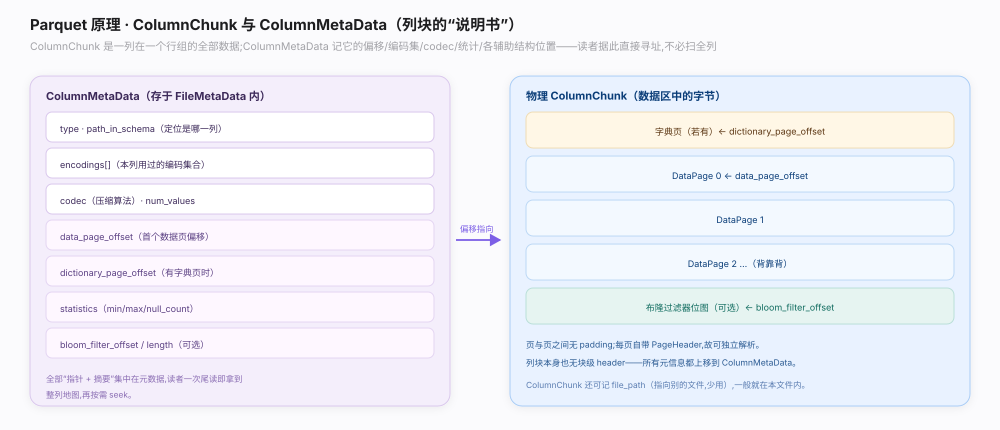
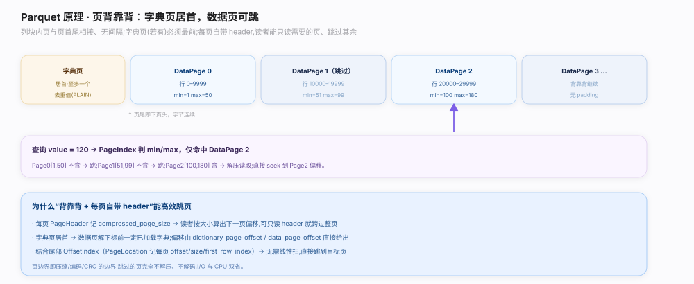
ColumnChunk（parquet.thrift:971）指向该列在文件中的字节段，ColumnMetaData（parquet.thrift:888）记它的偏移/编码集/统计/大小；列块内字典页居首、数据页背靠背，读者可按偏移直接跳读。是【文件布局】的行组组成、【列编码】/【压缩与页】产物的容器、【读路径】列裁剪与页跳读的定位依据。源码基准 parquet-format（parquet.thrift）。parquet.thrift:971，含 file_offset + 内嵌 meta_data）拼成，列块是"一列在一个行组里的全部字节"；ColumnMetaData（:888）是列块目录，记 type/path_in_schema（定位轴）/encodings[]（编码集）/codec/num_values/total_(un)compressed_size/data_page_offset/dictionary_page_offset/statistics（min/max/null_count）/可选 bloom_filter_offset；列块内部若用字典则 DICTIONARY_PAGE 居首（dictionary_page_offset 指向、整列数据页复用一张字典），数据页背靠背连续（data_page_offset 指向首页，读完页头即知下一页起点），读者可顺序读整块或结合 OffsetIndex 跳到目标页偏移只读命中页；每列块自带完整元数据，让读者仅凭 FileMetaData 就能规划读哪些列块、能否按统计跳过——支撑列裁剪与页跳读。dictionary_page_offset），供整列数据页复用。| 结构 / 字段 | 位置 | 职责 |
|---|---|---|
| ColumnChunk | parquet.thrift:971 | 行组内一列的字节段引用 |
| ColumnMetaData | parquet.thrift:888 | 列块目录：偏移/编码/统计/大小 |
| data_page_offset | parquet.thrift:888（内字段） | 第一个数据页偏移 |
| dictionary_page_offset | parquet.thrift:888（内字段） | 字典页偏移（居列块首） |
| encodings[] | parquet.thrift:888（内字段） | 这列用到的编码集合 |
| statistics | parquet.thrift:888（内字段） | 列级 min/max/null_count |
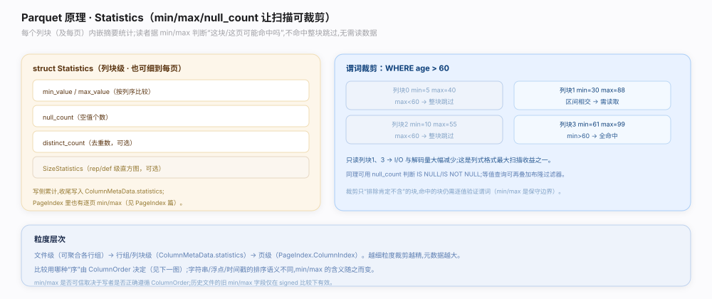
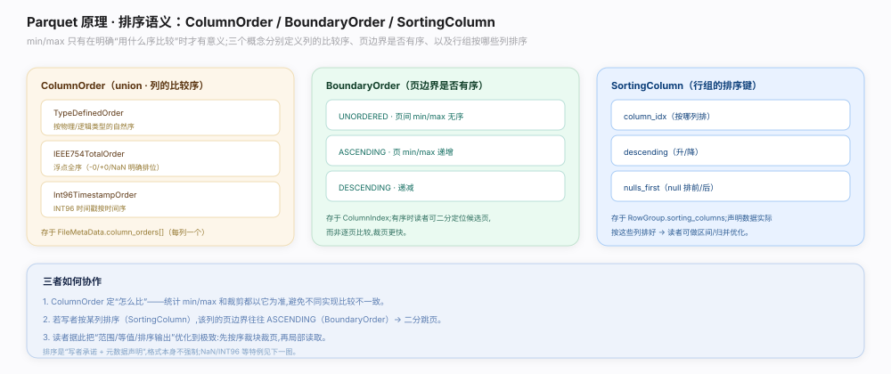
![Parquet 统计特例]()
parquet.thrift:267：min/max/null_count/distinct_count）供裁块裁页；排序语义（ColumnOrder parquet.thrift:1082、SortingColumn :857、BoundaryOrder :672）定义 min/max 怎么比、行组是否有序。是【PageIndex】/【布隆过滤器】的上游、【读路径】跳读的判据。特别处理 NaN、INT96 等比较特例。源码基准 parquet-format（parquet.thrift）。parquet.thrift:267，min_value/max_value/null_count/distinct_count，挂列块与页级）+ SizeStatistics（:202，未编码字节数 + rep/def 直方图）让读者一次比较（谓词 vs min/max）就整块/整页跳过、null_count 免读判空；min/max 的前提是比较语义明确——ColumnOrder（union，:1082，TypeDefinedOrder 按类型自然序）定"怎么比"、SortingColumn（:857）声明行组按哪些列升/降有序供二分归并、BoundaryOrder（:672：UNORDERED/ASCENDING/DESCENDING）声明页 min/max 是否单调可二分裁页；正确性铁律是凡比较语义未定义者不裁——浮点 NaN 不入 min/max（全 NaN 不写）、INT96 排序未定义不可依赖其统计、旧 min/max 字段语义不明须只信 min_value/max_value，宁可不裁也不裁错。min_value/max_value + ColumnOrder，旧字段语义不明已废弃。| 结构 | 位置 | 职责 |
|---|---|---|
| Statistics | parquet.thrift:267 | min_value/max_value/null_count/distinct_count |
| SizeStatistics | parquet.thrift:202 | 未编码字节数 + rep/def 直方图 |
| union ColumnOrder | parquet.thrift:1082 | 每列排序语义（min/max 怎么比） |
| SortingColumn | parquet.thrift:857 | 行组按哪些列升/降有序 |
| enum BoundaryOrder | parquet.thrift:672 | 页 min/max 是否单调（可二分裁页） |
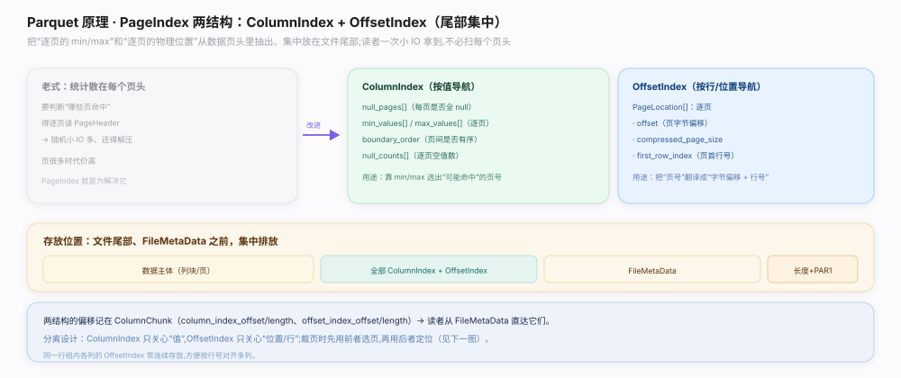
parquet.thrift:1264：每页 min/max/null_pages）回答"哪些页可能有"，OffsetIndex（parquet.thrift:1239：PageLocation :1214）回答"那页在哪、多大、从第几行起"。二者集中在文件尾部，实现页级裁剪（行组级裁块之下更细一层）。是【统计与排序】页级延伸、【读路径】跳页的核心。源码基准 parquet-format（PageIndex.md、parquet.thrift）。parquet.thrift:1264，每列块一份，含各页 min_values/max_values、null_pages、null_counts、boundary_order）回答"按值哪些页可能命中"，OffsetIndex（:1239，含 page_locations[]，每 PageLocation :1214 = offset + compressed_page_size + first_row_index）回答"页在哪、多大、从第几行起"；二者从数据页头抽出集中放文件尾部、按需一次范围读载入；裁页两步——ColumnIndex 逐页比 min/max 选候选页号（BoundaryOrder=ASCENDING 可二分、null_pages 加速判空），OffsetIndex 把页号翻成字节偏移直接 seek 只读命中页、first_row_index 让多列按行对齐拼回整行；这是行组级 Statistics 裁块之下更细的页级裁页，两级叠加逐层缩小读取字节，裁剪保守、命中页仍需逐值精确校验。| 结构 / 字段 | 位置 | 职责 |
|---|---|---|
| ColumnIndex | parquet.thrift:1264 | 每页 min/max/null_pages/boundary_order |
| OffsetIndex | parquet.thrift:1239 | 每页 PageLocation 列表 |
| PageLocation | parquet.thrift:1214 | offset + compressed_page_size + first_row_index |
| boundary_order | parquet.thrift:1264（内字段） | 页 min/max 单调 → 二分裁页 |
| first_row_index | parquet.thrift:1214（内字段） | 本页首行号，多列按行对齐 |
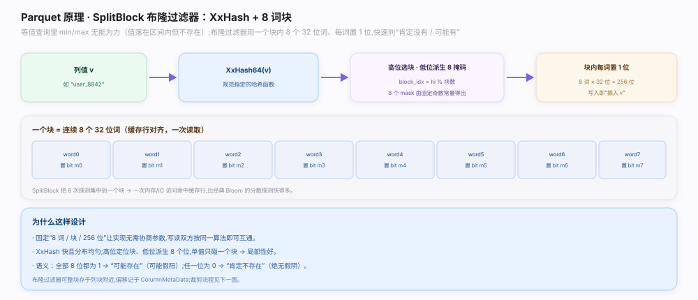
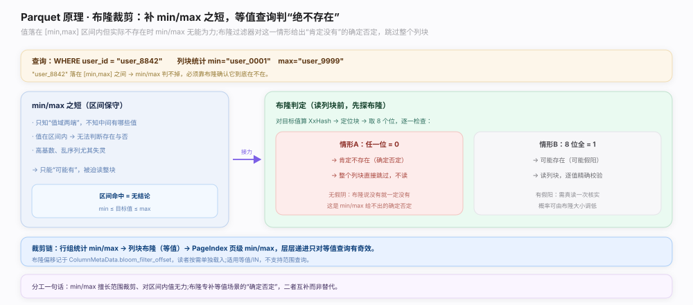
SplitBlockAlgorithm parquet.thrift:766）+ XxHash（:776）哈希 + BloomFilterHeader（:799）。当查询值落在 [min,max] 区间内但实际不存在时，min/max 无能为力，布隆给出"肯定不存在"的确定否定。是【统计与排序】的等值补充、【读路径】裁块的一环。源码基准 parquet-format（BloomFilter.md、parquet.thrift）。parquet.thrift:766）对列值算 XxHash（:776）→ 高位选块（block_idx = hi % 块数）、低位派生 8 个掩码，一个块=连续 8 个 32 位词=256 位（缓存行对齐）、块内每词置 1 位，单值只碰一个块一次内存访问命中缓存行（比经典分散探测的 Bloom 快），位图存列块附近、偏移记 ColumnMetaData.bloom_filter_offset、头部 BloomFilterHeader（:799）声明算法哈希大小；裁剪时当目标值落在 [min,max] 区间内 min/max 判不掉，读列块前先探布隆——任一位为 0 则肯定不存在（确定否定、无假阴）整块跳过，8 位全 1 则可能存在（可能假阳）读块逐值校验；仅支持等值/IN 不支持范围，与 min/max（范围裁剪）互补而非替代。| 结构 | 位置 | 职责 |
|---|---|---|
| SplitBlockAlgorithm | parquet.thrift:766 | 分块布隆算法（8 词/块/256 位） |
| XxHash | parquet.thrift:776 | 规范指定的哈希函数 |
| BloomFilterHeader | parquet.thrift:799 | 声明算法/哈希/压缩/大小 |
| bloom_filter_offset | parquet.thrift:888（ColumnMetaData 内） | 布隆位图在文件中的偏移 |
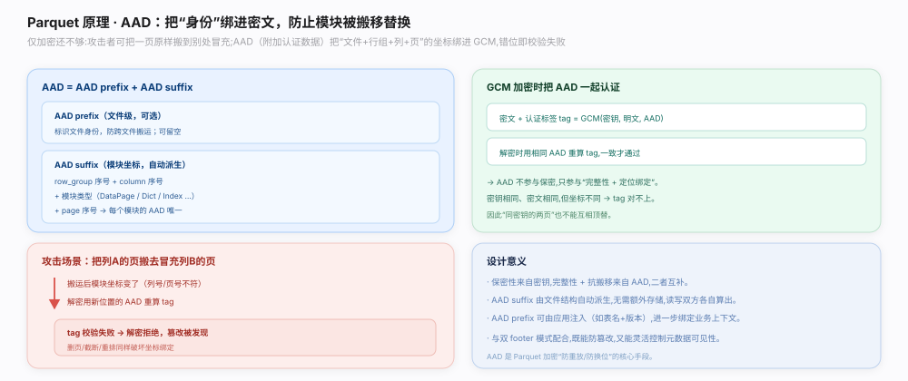
![Parquet 双 footer]()
EncryptionAlgorithm（parquet.thrift:1378：AesGcmV1 :1354 / AesGcmCtrV1 :1366）、footer 密钥 vs 列密钥双密钥模型（EncryptionWithFooterKey :955 / EncryptionWithColumnKey :958）、AAD（附加认证数据）防篡改/换页、加密 footer 与明文 footer 双模式（FileCryptoMetaData :1453）。是安全合规场景的读写前置。源码基准 parquet-format（Encryption.md、parquet.thrift）。parquet.thrift:1378）二选 AesGcmV1（:1354，全模块 GCM 认证加密）或 AesGcmCtrV1（:1366，元数据 GCM、数据页 CTR 省认证开销）；双密钥模型——敏感列用独立列密钥 EncryptionWithColumnKey（:958）、其余列与 footer 用 footer 密钥 EncryptionWithFooterKey（:955），实现列级授权（只给 footer 密钥者读不到独立密钥列）；每个加密模块喂 AAD（prefix 文件唯一标识防跨文件搬运 + suffix 模块类型/行组/列/页序号防同文件换页换列），把身份坐标绑进 GCM 认证使密文离位即失效防重放换位；两种 footer 模式——加密 footer（FileMetaData 全加密、FileCryptoMetaData :1453 指引密钥，最安全但破坏兼容）vs 明文 footer（元数据明文带签名、仅数据加密，老读者仍能读 schema、向后兼容），按元数据是否需保密 + 是否需兼容权衡。| 结构 | 位置 | 职责 |
|---|---|---|
| union EncryptionAlgorithm | parquet.thrift:1378 | AesGcmV1 / AesGcmCtrV1 二选一 |
| AesGcmV1 | parquet.thrift:1354 | 全模块 GCM 认证加密 |
| AesGcmCtrV1 | parquet.thrift:1366 | 元数据 GCM、数据 CTR 省认证 |
| EncryptionWithFooterKey | parquet.thrift:955 | 列用 footer 密钥加密 |
| EncryptionWithColumnKey | parquet.thrift:958 | 列用独立列密钥加密 |
| FileCryptoMetaData | parquet.thrift:1453 | 加密 footer 模式的尾部密钥元信息 |
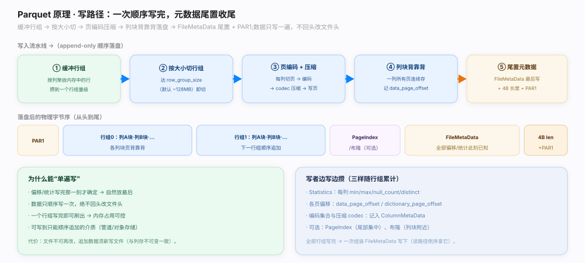
FileMetaData（parquet.thrift:1386）尾置 + 4B 长度 + PAR1。是【文件布局】的生产者，驱动【列编码】/【压缩与页】填页、【统计与排序】攒 Statistics、【PageIndex】/【布隆过滤器】建索引。源码基准 parquet-format（README.md File format 单遍写一节）。README.md:117）：先写头魔数 PAR1，然后①缓冲行进内存按列聚拢 →②攒够 row_group_size 切出行组 →③每列切页、列编码（PLAIN/RLE/字典/DELTA）+ codec 压缩写页 →④一列所有页连续成列块（记 data_page_offset/dictionary_page_offset）、列块背靠背拼行组 →⑤全部行组写完组装 FileMetaData（parquet.thrift:1386，此刻偏移/统计全已知）一次写下 + 4B 长度 + PAR1 收尾；写者随行组累计 Statistics（:267，每列 min/max/null）、各页偏移、编码集/codec 记入 ColumnMetaData，可选 PageIndex/布隆收尾追加；能单遍的根因是偏移/统计写完才定故尾置、数据只顺序写一遍不回头改文件头（可写到管道/对象存储）、读者末 8 字节即得元数据长度反跳读，代价是文件不可变、追加须新写文件——与 ORC 尾部索引同源。PAR1。| 步骤 / 结构 | 位置 | 职责 |
|---|---|---|
| 单遍流式写 | README.md:117 | 数据只写一遍，元数据尾置 |
| 头/尾魔数 PAR1 | README.md:96 | 开头标识 + 结尾 4B 长度前 |
| FileMetaData 尾置 | parquet.thrift:1386 | 全部偏移/统计写完一次组装 |
| Statistics 累计 | parquet.thrift:267 | 每列 min/max/null 边写边攒 |
| ColumnMetaData | parquet.thrift:888 | 记偏移/编码集/codec/统计 |
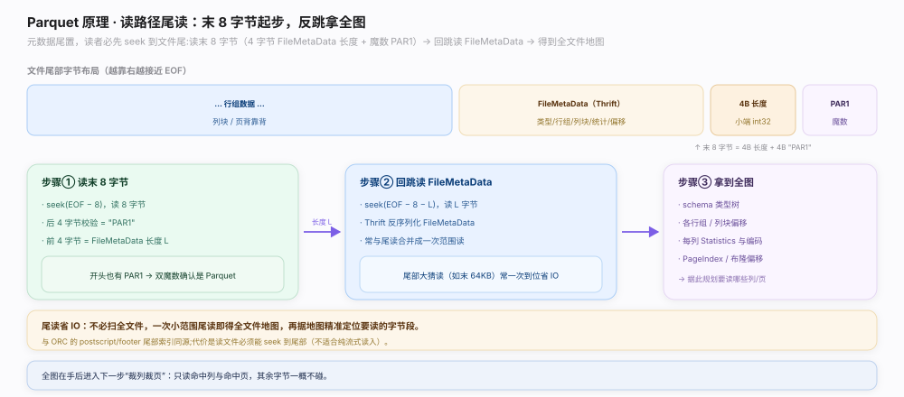
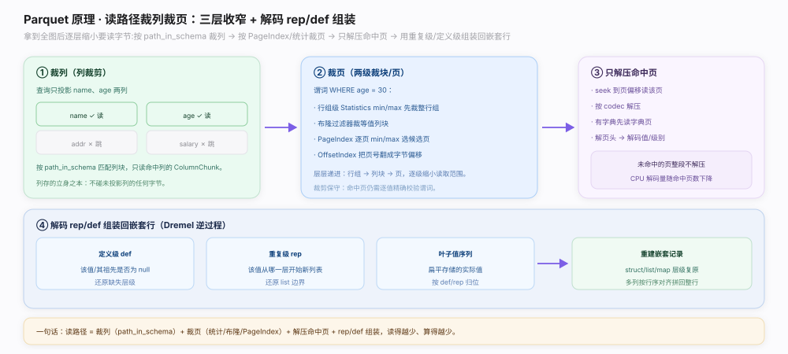
FileMetaData（parquet.thrift:1386）全图 → path_in_schema 列裁剪 → Statistics/布隆/PageIndex 裁块裁页 → 解压命中页、解码 rep/def（README.md:166）组装回嵌套行。是【文件布局】倒读的消费者，调用【统计与排序】/【PageIndex】/【布隆过滤器】裁剪、【列编码】/【压缩与页】解码、【Dremel 嵌套编码】组装。源码基准 parquet-format（README.md、parquet.thrift）。parquet.thrift:1386）拿全图（schema/偏移/统计/索引偏移），常合并成一次尾部大猜读省 IO；②裁列——按 path_in_schema 只读投影列的 ColumnChunk 其余不碰；③裁页——谓词经行组 Statistics min/max 裁块 → 布隆裁等值列块 → PageIndex 逐页 min/max 选页 → OffsetIndex 翻字节偏移，行组→列块→页三级递进（保守，命中仍逐值校验）；④只解压命中页（有字典先读字典页、未命中页不解压省 CPU）；⑤解码 rep/def 组装（def 还原 null/缺失层、rep 还原 list 边界、叶子值按级别归位，README.md:166 逆 Dremel）、多列按 first_row_index 行号对齐拼回嵌套整行交引擎；与 ORC 尾部索引同源，代价是读需能 seek 到尾部。| 步骤 / 结构 | 位置 | 职责 |
|---|---|---|
| 倒读末 8 字节 | README.md:96 | 4B 长度 + PAR1 → 定位 FileMetaData |
| FileMetaData | parquet.thrift:1386 | 全文件地图（schema/偏移/统计） |
| path_in_schema 列裁剪 | parquet.thrift:888（ColumnMetaData 内） | 只读投影列的列块 |
| 统计/布隆/PageIndex 裁块裁页 | :267/:766/:1264 | 行组→列块→页三级裁剪 |
| rep/def 组装 | README.md:166 | 逆 Dremel，重建嵌套行 |